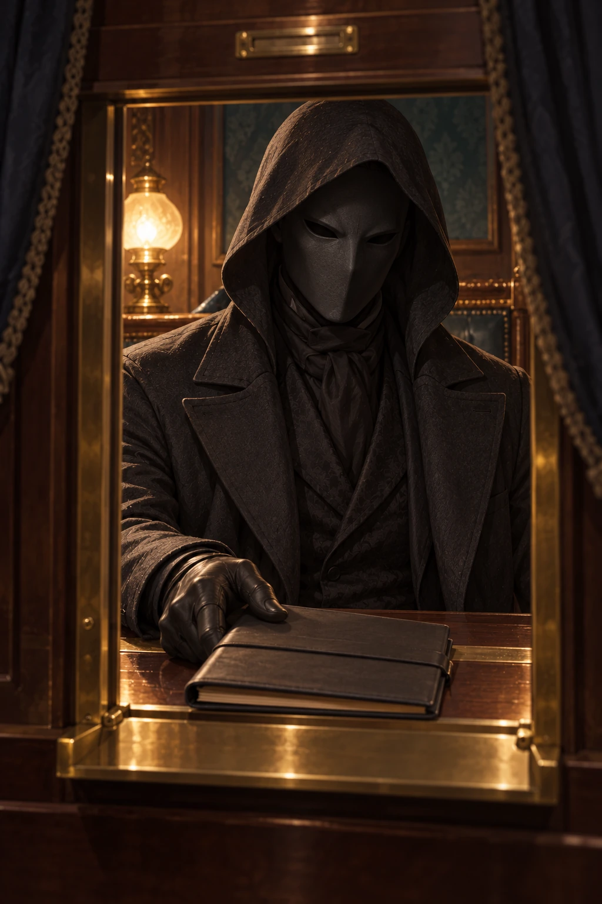

Ducato e gerarchia territoriale — 347
Rovenne è un ducato territoriale di 16.400 km² e 1.200.000 abitanti: quattro contee, due distretti diretti e diciotto baronie. Lethorne ne è il capoluogo amministrativo; il borgo di Rovenne ospita la residenza dinastica. Il patrimonio privato Valcienne rimane di 184 km². Territorio, titolari e competenze del ducato.
Aspetto moderno e figura antica
Alexander ha occhi dorati, capelli neri corti portati leggermente indietro, barba nera ordinata e nessun occhiale, su un corpo atletico di 189 cm. Il riferimento antico di Edran ha capelli bianchi o argentati e occhi dorati; non è una trasformazione involontaria del corpo moderno.
Accesso alla fonte
Le cinque Effigi sono proprie e stabili a IV. Inner Expanse e la soglia corporea O-ENTRY-01 sono accessi delimitati alla fonte fisica; non creano un secondo Alexander, un teletrasporto libero o una vita di riserva.
Rapporti della vita civile
Rapporti conosciuti attraverso le memorie del giovane duca; nessuna conoscenza automatica dei segreti altrui e nessun sentimento imposto a Edran.
- Celine Valcienne: Rapporto civile ricordato prima del coma: Fratello premuroso ma spesso assente; promessa di visita alla biblioteca rimasta sospesa.
- Yselle Valcienne: Rapporto civile ricordato prima del coma: Zia paterna, rapporto familiare e dissenso tecnico autonomo.
- Martin Lethorne: Rapporto civile ricordato prima del coma: Zio acquisito; spiegazioni di meccanica e possibilità di fare domande senza cerimoniale.
- Albin Sere: Rapporto civile ricordato prima del coma: Amministratore ordinario
- Teren Holt: Rapporto civile ricordato prima del coma: Responsabile ordinario della sicurezza
- Mirel Osta: Rapporto civile ricordato prima del coma: Medico ordinario chiamato dalla famiglia
- Heloise Brant: Rapporto civile ricordato prima del coma: Familiarità domestica e pasti abituali.
- Sabine Varel: Rapporto civile ricordato prima del coma: Fiducia domestica e tensione sulle richieste non espresse.
- Victor Lann: Rapporto civile ricordato prima del coma: Rapporto formativo di equitazione e cura degli animali.
- Isabel Mornet: Rapporto civile ricordato prima del coma: Confidenza tecnica dal 810, entro un rapporto di lavoro asimmetrico.
- Estelle Nerin: Rapporto civile ricordato prima del coma: Fiducia nei resoconti contabili, anche sfavorevoli.
- Felix Orlen: Rapporto civile ricordato prima del coma: Conversazioni su corse e sport fra coetanei, entro un rapporto di lavoro.
- Aurelie Belcour: Rapporto civile ricordato prima del coma: Conosce Alexander da bambina; amicizia prudente, ironia condivisa e fidanzamento confermato personalmente nel 811. Non ricorda una dichiarazione di amore reciproco.
- Armand Belcour: Rapporto civile ricordato prima del coma: Interlocutore di Lucien; Alexander ne ricorda ospitalità e pazienza, insieme alla tendenza a parlare delle persone come di accordi futuri.
- Beatrice Belcour: Rapporto civile ricordato prima del coma: Alexander la conosce come ospite attenta, capace di interrompere con cortesia una discussione che tratta Aurelie come assente.
- Olivier Ardel: Rapporto civile ricordato prima del coma: Alexander ricorda vacanze e pranzi meno formali; lo zio gli disse dopo il funerale che essere duca non significava saper fare tutto.
- Helene Ardel: Rapporto civile ricordato prima del coma: Alexander la frequentava nei pranzi Ardel; lei riconosceva quando nascondeva imbarazzo dietro una battuta educata.
- Gabriel Ardel: Rapporto civile ricordato prima del coma: Compagno di passeggiate e scherma ordinaria; nel febbraio 812 litigarono quando Alexander offrì un posto senza chiedergli quale lavoro volesse.
- Etienne Ravelle: Rapporto civile ricordato prima del coma: Amico dal 804: scherma, concerti e ironia sui discorsi cerimoniali. Alexander gli confidava insofferenza per gli obblighi; non la propria decisione finale.
- Leon Vernier: Rapporto civile ricordato prima del coma: Competizione in scherma e dibattiti scolastici. Nel 810 Leon vinse una gara; Alexander contestò il giudizio troppo pubblicamente e poi si scusò in privato.
- Jean Orrel: Rapporto civile ricordato prima del coma: Conoscenza di libri e visite, non soltanto concessioni patrimoniali.
- Bastien Quell: Rapporto civile ricordato prima del coma: Frequentazione professionale nelle visite agli impianti.
- Rosa Edril: Rapporto civile ricordato prima del coma: Contestò educatamente una priorità di spesa durante i rapporti con il giovane duca.
- Odette Sarin: Rapporto civile ricordato prima del coma: Interlocutrice professionale, non confidente personale; nessuna conoscenza dei suoi segreti.


Una sola persona
Edran Vael è la persona antica ritornata nel corpo di Alexander Valcienne, duca di Rovenne. Edran è il nome ricevuto alla nascita; Vael è il nome di casa libera assunto dopo l'emancipazione. La grafia corrente è una traslitterazione delle lingue antiche.
Il giovane Alexander morì durante un coma successivo al proprio avvelenamento. Al risveglio il corpo è abitato soltanto da Edran: non esistono una seconda volontà, una voce residua del duca o una fusione fra le due persone. Per la società contemporanea il convalescente è ancora Alexander Valcienne.
Corpo attuale
Il corpo ha vent'anni e cinque mesi, è alto 189 cm e ha una corporatura atletica. I capelli sono neri, corti e portati leggermente indietro; gli occhi sono dorati. Il colore degli occhi apparteneva già al duca ed era noto ai suoi conoscenti: non è una trasformazione comparsa con il ritorno.
Alexander può mangiare, dormire e svolgere le normali attività corporee. Le cinque Inscription IV sono incorporate e rimangono operative anche quando il suo aspetto è ordinario. I poteri non richiedono l'abbandono del corpo; le forme semidivine aperte sono modalità controllate.
Memorie e competenze
Edran conserva la memoria autentica della propria prima vita e i ricordi autobiografici integrali del duca fino alla perdita di coscienza. Distingue l'origine delle due memorie. I sentimenti ricordati del giovane Alexander sono parte della sua biografia, senza costituire una volontà ancora attiva.
Il duca conosceva amministrazione patrimoniale, corrispondenza, lingue di scambio, equitazione, scherma e tiro ordinario. Edran possiede inoltre la propria esperienza militare, negoziale e soprannaturale. Le memorie di una macchina vista senza comprenderla non equivalgono alla conoscenza del suo progetto.
Prima della caduta Edran aveva vissuto 684 anni. I 12.312 anni trascorsi fino al ritorno non furono una lunga esperienza cosciente di prigionia e non gli forniscono ricordi degli eventi accaduti durante l'assenza.
Carattere e titoli
Edran era orgoglioso e sarcastico, capace di generosità, amore, risentimento e durezza. La sua capacità di liberare e costruire conviveva con quella di distruggere. Le responsabilità delle sue scelte passate non sono cancellate dal titolo di liberatore.
The Sovereign — The Beginning and the End è il titolo dell'antica integrazione completa; Creator e Liberator furono appellativi usati da comunità differenti. Nessuno di questi titoli indica il rango attuale IV. Il nome antico non è comunemente riconosciuto dalla popolazione moderna.
La dignità ducale di Alexander deriva dalla successione civile. Il titolo, il patrimonio e i contratti non gli attribuiscono Crown, Chain o Coin né il potere di riscrivere la legge nazionale.
La famiglia
Alexander è il primogenito legittimo di Lucien Valcienne ed Eliane Ardel, sposati. Ha una sorella minore, Celine Valcienne, quattordici anni. Il titolo ducale è passato ad Alexander dopo la morte del padre.
I genitori morirono cinquantatré giorni prima del risveglio, nel naufragio della nave passeggeri Bellance durante un viaggio commerciale. Alexander conosce rapporti, testimonianze ricevute e atti di successione; non vide il naufragio. “Incidente in mare” è la conclusione pubblica nota, non una sua osservazione infallibile di ogni causa.
La sorella vive nella casa di Rovenne con tutela e personale familiare. Alexander aveva assunto responsabilità patrimoniali e legali senza essere pronto a tutte. Il legame ricordato era affettuoso e a volte teso; la sua morte non trasferisce alla persona attuale un obbligo emotivo, ma conserva le conseguenze sociali del rapporto.
Yselle Valcienne, trentaquattro anni, è la sorella minore di Lucien, quindi zia di Alexander. È ingegnera, sposata, vive a Lethorne e possiede partecipazioni proprie.
Formazione e competenze
Alexander ricevette istruzione aristocratica e amministrativa: lettura, scrittura, storia pubblica, diritto patrimoniale pratico, contabilità di base, corrispondenza, lingue di scambio, equitazione, scherma e tiro ordinario. Conosceva principi scolastici sulle Effigi, non il corpus originario né segreti divini. Non era un Bearer: nessuna Inscription precedente da fondere con le cinque attuali.
Le memorie comprendono le conoscenze geografiche e istituzionali possedute dal duca.
Casa, titolo e patrimonio ricordato
Rovenne è la residenza familiare e il centro dell'ufficio patrimoniale, a ventitré chilometri da Lethorne, con strada e fermata ferroviaria. Orsanne è una monarchia con Camere e ministeri; il duca ha competenze civili e un seggio nella Camera delle Concessioni, non immunità generale dalla legge.
L'ultimo rapporto patrimoniale letto da Alexander, quattordici giorni prima del risveglio, elencava 18.400 ettari nominali, dodici mulini, quote minoritarie in trasporti e apparecchi elettrici, due magazzini portuali in concessione. Non possedeva il Consorzio dei Tre Moli. Indicava 73.000 corone in cassa e depositi, di cui 25.000 impegnate per stipendi e forniture prossimi: quota non impegnata 48.000; debito totale 1.100.000. Sono dati di quel rapporto, non una visualizzazione magica del saldo attuale.
Conosce documenti, firme, luoghi abituali e procedure familiari. Può chiedere ad Albin il saldo aggiornato e decidere come esercitare i suoi diritti.
Ultime settimane
Alexander cercava di governare lutto, corrispondenza, debiti, richieste e responsabilità familiari. Delegò parte della gestione ad Albin Sere. Ebbe discussioni con la zia su un progetto industriale e rifiutò alcune occasioni di aiuto.
Alexander non scelse di morire: la crisi fu subita, come precisato nelle fonti 369, e le sue ultime memorie non comprendono intenzioni suicide. Il coma non produce ricordi coscienti retroattivi delle conversazioni avvenute accanto al letto.
È trascorso un coma di quattro giorni: questo intervallo può essere appreso da personale, cartella o orologio e calendario verificati, non dalle memorie di un duca incosciente. La morte del giovane duca precedette il ricongiungimento di Edran. Nessuna seconda persona vive ora nel corpo.
Il risveglio come situazione, non scena giocata
Il corpo è nella camera di convalescenza di Rovenne. Non c'è un pubblico che abbia assistito direttamente alla morte e resurrezione. La respirazione e la ripresa vengono osservate come miglioramento dopo il coma. Il personale conosce Alexander; nessuno sa automaticamente che Edran è tornato.
La segretezza è iniziale, non un incantesimo inviolabile. Cartella, segni di guarigione, abitudini cambiate o manifestazioni aperte possono suscitare domande.
Oggetti e accessi ricordati
Conosce l'ubicazione abituale di abiti, sigillo ducale, chiavi personali, corrispondenza e armi ordinarie. Al risveglio gli oggetti non sono automaticamente tutti in mano: alcuni sono custoditi nell'ufficio o dal personale. Può ottenerli attraverso i suoi normali diritti e rapporti, salvo impedimenti reali da verificare.
Nessuna reliquia del vecchio Sovereign è assegnata come inventario noto per il solo fatto che vive in una casa aristocratica. Il passato del corpo fornisce accesso sociale e memoria; i poteri attuali provengono dalla continuità antica ricostituita.
Rapporti civili
La rete familiare, amicale e matrimoniale è integrata in Rete civile di Alexander. Il fidanzamento Belcour non è un matrimonio celebrato e non modifica cassa, debito, organico o tutela. Le memorie pre-coma restano integrali.
I nomi applicativi presenti qui descrivono usi del repertorio cumulativo, non nuovi sblocchi. Per nomi specifici e competenze vigenti: indice 316.
Stato iniziale
| Componente | Condizione reale al risveglio |
|---|---|
| Persona | Edran Vael, unica, cosciente nel corpo di Alexander Valcienne. |
| Corpo | Restaurato e investito, vent'anni apparenti; non un umano indifeso che prende in prestito una barriera. |
| Weave | Cradle IV, Ruin IV, Scroll IV, Halo IV, Heart IV, tutte proprie e stabilizzate. |
| Fonte | The Origin, relazione interna operativa sufficiente ai cinque esercizi IV. Nessuna Root estranea. |
| Sapere | The First Testament consultabile; memoria tecnica antica integra e memorie del duca. |
| Presupposti esclusivi | Cradle e Ruin presenti nella continuità. Non attribuiscono ancora esercizio VII. |
| Regime | Ready, Reserve disponibile, difese personali stabili sostenibili. |
| Modalità propria | Corporeal; percezioni e emanazioni locali previste dalle tecniche. Nessun Avatar angelico remoto già assegnato. |
| Apice | Non esercita ancora Fulfilment completo, qualità V–VII o The Sovereign operativo completo. |
Il sonno ordinario non spegne i mantelli. Non deve consumare pozioni, recitare un nome o disegnare un emblema per riattivare ogni mattina le cinque Inscription. Conversare, toccare una persona o pensare a una forma non attiva involontariamente comandi o distruzioni.
Cradle IV — capacità operative
Creazione quotidiana: produce un bicchiere di whisky, acqua, cibo, abiti, utensili e armi reali. Un prodotto indipendente non scompare quando perde l’attenzione. Per forme familiari non occorre una simulazione molecolare; per una macchina complessa serve sapere come funziona. Le memorie del duca aiutano con strumenti industriali che comprendeva, non con ogni tecnologia esistente.
Offesa: fa emergere lame, masse in movimento, esplosivi progettati e dispositivi autonomi in un teatro raggiunto. Arsenal Bloom ha riferimento fino a 300 m visibili e scala di singole strutture edilizie. Una barriera nemica contende la creazione nello spazio protetto; non genera gratuitamente una bomba dentro un Core schermato.
Difesa: Generative Mantle interpone e rinnova strati fisici e spirituali sul corpo. Può aggiungere ripari per altri, ricostruire una parete o produrre una protezione contro un fenomeno diagnosticato. Il mantello personale rimane attivo mentre crea.
Mobilità: Conceived Flight sostiene ali, propulsione o una piattaforma: può volare corporeamente. Non è teletrasporto né viaggio istantaneo fra mondi. Il sostentamento va mantenuto; perdere una piattaforma non spegne automaticamente gli altri mantelli.
Vita creata: Living Design consente animali complessi e persone di corporeità ordinaria. Preparazione da minuti a giorni secondo complessità, Demanding, individui indipendenti con volontà propria. Una nuova persona con ricordi concepiti non è la resurrezione del soggetto imitato. Può produrre anatomie insolite praticabili e funzioni investite sostenibili mediante Creation; non può generare Angeli gratuiti, Seats o la piena costituzione V–VII. Generative Gate, Recursive Genesis ed Emergent Genesis restano da recuperare.
Esempio: costruire un riparo e viveri per un gruppo è possibile. Produrre istantaneamente una civiltà completa con fedeltà assoluta non è una tecnica IV. Generare una stella appartiene alla sua antica competenza, non all'esercizio attuale.
Ruin IV — capacità operative
Destruction — disgregazione: rompe una struttura raggiunta, colpisce corporeità o emanazioni e sfrutta punti di frattura. Far crollare un edificio vulnerabile non è identico ad annullarne tutta la massa; la rottura lascia residui e conseguenze.
Destruction — annullamento: il bicchiere non serve più: lo annulla davvero, senza polvere o teletrasporto. Tutti gli esercizi di Ruin richiedono contatto fisico pertinente. Unmaking annulla la materia toccata; Destructive Cascade può estendersi distruggendo il percorso continuo realmente preso. Toccare il braccio non consente di saltare direttamente a una gamba intatta. La scala edilizia richiede continuità effettivamente distrutta, senza gittata libera di 300 m. Può asportare un'arma o aprire un varco; distinguere un bersaglio da ciò che vuole conservare è parte della competenza.
Destruction — Finality (sblocco IV): Last Operation applica Finality per contatto fisico con il corpo, supporto o interfaccia pertinente e termina il circuito, rinnovo o richiamo realmente preso. Il contatto con un effetto periferico non raggiunge automaticamente la sorgente remota. Una ferita già prodotta resta; una sorgente nuova realmente indipendente non viene vietata per sempre. Non ottiene contromagia universale sapendo soltanto il nome della tecnica.
Difesa: Vacant Mantle intercetta e sottrae materia e investimenti ostili sul confine personale. Seleziona contatti innocui e vesti; non annulla la stanza mentre dorme. Attacchi semidivini pertinenti possono contenderlo o aumentarne il carico.
Esempio: rimuove la serratura senza distruggere la porta, oppure la parete per uscire. Può neutralizzare un attacco raggiunto e interromperne alimentazione. Non annulla una persona distribuita in ogni luogo perché ha visto un suo corpo; a IV non esercita Existential Erasure VII (applicazione The Last Instance).
Scroll IV — capacità operative
Will e ricordo: Volitional Interdict può interdire il richiamo volontario di un ricordo specifico raggiunto. Il destinatario realmente non riesce a ricordarlo finché l’interdizione prevale; la traccia non è cancellata e le prove esterne restano.
Analisi e contromagia: legge strutture operative accessibili, individua nodi e controformula. Counterstructure può contendere la struttura diagnosticata; Semantic Disassembly è un’applicazione analitica che può dissociare istruzione, bersaglio e alimentazione di una barriera o tecnica raggiunta. Componenti già indipendenti restano da affrontare con mezzi pertinenti.
Offesa autonoma: Force Clause colpisce con forza soprannaturale propria, respinge e frattura. Non deve aspettare che l'avversario lanci magia. La sua scala cresce con IV entro bersaglio e accesso effettivi; non usa Divine Imperative VII.
Comandi: Command Sequence raggiunge più destinatari individuati entro 300 m con significato trasmesso e azioni eseguibili. “Lascia l'arma e allontanati” può prevalere su una volontà inferiore senza protezioni pertinenti. Rango, difesa, ricezione, complessità e simultaneità contano. Una parola non rende automaticamente morto un dio remoto.
Assenso interiorizzato: può influenzare una decisione circoscritta affinché venga assunta come propria. La vittima può non riconoscere l'imposizione. Questo non cancella tutte le sue esperienze o garantisce obbedienza futura; diagnosi, nuove prove o contesa possono sciogliere l'influenza.
Difesa: Living Interdiction respinge ingressi materiali e protegge la formulazione personale. Non dipende da parlare continuamente. Unspoken Clause consente espressione scritta, gestuale o spiritualmente trasmessa; la voce non è la sola via.
Esempio: una pattuglia ordinaria può essere disarmata attraverso comando o forza propria. Un nemico che non ascolta può essere colpito fisicamente dalla clausola pertinente; un comando mentale richiede comunque ricezione del significato. Conoscere una mente non equivale a leggere tutti i suoi ricordi come Labyrinth.
Halo IV — capacità operative
Luce offensiva: Incandescent Crown concentra fasci o fronti capaci di tagliare strutture e vaporizzare porzioni raggiunte. Può colpire spiriti esposti con l'investimento pertinente. Non serve chiamare impuro il bersaglio e non deve incendiare tutto ciò che illumina.
Esposizione: Day of Exposure rende osservabili presenze e occultamenti nel dominio raggiunto, riferimento fino a 500 m visibili. Non legge automaticamente dietro ogni ostacolo e non comunica nome, passato o intenzioni del bersaglio. Le protezioni occultanti vengono contese.
Purificazione: Exorcism of the Joined distingue e separa infestazioni spirituali da un organismo. Se le componenti sono intrecciate, una diagnosi incompleta può lesionare l'ospite. Le memorie autentiche del duca non sono un'infestazione da espellere.
Difesa: Radiant Mantle intercetta impatti e investimenti invasivi; luce e separabilità personale possono opporsi a intrusioni pertinenti. L'aspetto contenuto non elimina questa protezione.
Esempio: illumina un locale, espone una presenza nascosta e la colpisce con un fascio concentrato. Può purificare il residuo infestante e lasciare a Heart la restaurazione delle lesioni. Non viaggia già come luce attraverso un dominio urbano: Radiant Transit è V.
Heart IV — capacità operative
Bersagli: Deep Vitality e Living Fortress sono costituzioni proprie. Living Fortress sostiene funzioni mediante ridondanza interna; il sostegno mediante una struttura vivente esterna compatibile è Functional Substitution VI, ancora indisponibile. Le capacità rivolte agli altri richiedono i rispettivi accessi.
Corpo: vigore, resistenza e ridondanza funzionale semidivini. Può sollevare una carrozza carica, piegare grate ordinarie e colpire strutture con forza devastante. Il corpo non è soltanto una mente che comanda guardie; nessun bersaglio viene però ferito senza presa fisica o emanazione pertinente.
Rigenerazione estrema: rigenera arti e organi, restaura parti vaste di sé o di un vivente raggiunto. Riparazione propria da secondi secondo lesione; corpi esterni complessi da minuti, Demanding. La cura non consuma necessariamente un'altra vita e non deve lasciare amnesia per compensare la sua potenza.
Offesa: Vital Rupture aggredisce funzioni e coesione spirituale entro 300 m attraverso emanazione e percezione reali. Può arrestare una funzione o provocare collasso; difese pertinenti contendono. Un automa minerale non ha l'organo biologico che vuole fermare.
Rianimazione: Reanimation of the Near permette il ritorno della stessa persona morta biologicamente se continuità e corpo sono ancora raggiunti e restaurabili. Non c'è una scadenza universale in minuti. Il morto davvero estinto non viene ricreato da una memoria.
Difesa: Living Fortress resta operativa senza dover decidere di guarire ogni pallottola. Una pistola comune non lo uccide quando è in condizione Ready, nemmeno distratto. Una contaminazione persistentemente alimentata richiede separazione della causa e riparazione, non una dichiarazione generica di immunità a tutti i veleni cosmici.
Esempio: può continuare a combattere dopo lesioni che annienterebbero un umano e restaurare l'arto di un altro. Non ricostruisce già un corpo intero da qualunque Anchor remoto dopo totale annullamento: Unfailing Core e restaurazione angelica propria sono V.
Le cinque difese e il carico
I mantelli sono componenti della stessa Weave sostenuta da The Origin, non cinque persone o cinque barre di vita. Le difese personali ordinarie sono Routine e possono coesistere con movimento, sonno, conversazione e un attacco.
Reserve e Capacity sono condivise. Una distruzione estesa tramite contatti effettivi, un'esposizione Halo massima e rigenerazioni multiple possono impegnare simultaneamente il margine. Nessun pagamento universale in anni di vita, nessun esaurimento dopo aver creato un bicchiere.
In Ready può sostenere le protezioni personali, volo corporeo e interventi mirati ordinari; un campo esteso o ricostruzione complessa richiede investimento significativo ma non una pausa obbligatoria dopo ogni uso. Ripetizioni massime senza recupero possono portare a Strained o Overdrawn. I tempi si deducono da lesione, alimentazione e Load, non da un identico riposo fissato per tutte le capacità.
Uso congiunto a IV
Può creare una lama e investirla di Halo, annullare il suo scarto di produzione, esporre un'intrusione e restaurarne l'ospite, analizzare un flusso e terminarlo quando raggiunto. Le operazioni possono essere rapide e coordinate grazie all'esperienza e alla fonte. Non diventano Fulfilment completo: le componenti restano contendibili e la Quality non sale a VII sommando cinque IV.
Inventario iniziale conosciuto
Possiede corpo, Weave, fonte, sapere, presupposti esclusivi e memorie. Al risveglio si trova in abiti di convalescenza nella camera di Rovenne. Sigillo ducale, chiavi, guardaroba, arma ordinaria e documenti sono accessibili attraverso la casa, non già artefatti cosmici in tasca. Il patrimonio è una rete civile con vincoli, non Reserve soprannaturale.
Non sono assegnati uno spazio personale illimitato, una città nascosta controllata, un esercito di Avatars, una Root estranea, un oggetto che garantisce resurrezioni automatiche o una Seat VII operativa. L'assenza di un teletrasporto non annulla volo, movimento ordinario e possibilità di usare mezzi esterni coerenti.
Rischio personale reale
Attacchi di pari o superiore Quality, appropriazione di accessi, danno spirituale e contesa della continuità possono ferirti. Distruzione di un corpo non equivale sempre a estinzione, ma al grado IV non ha ancora piena autonomia angelica garantita oltre qualunque perdita. Heart può riattivare una continuità ancora raggiunta; Ruin che la annulla davvero non lascia un bersaglio da restaurare.
La vecchia catastrofe non si ripete automaticamente appena usi potere. Le cause riservate del ritorno non sono una maledizione inventata per spegnere le difese o obbligarti a un arco. Il recupero 82 distingue ciò che può diagnosticare dalle verità ancora ignote.
Accesso intrinseco attuale a The Origin
Rapporti civili — revisione 23-EFF-01
Le matrici macro revisionate delle cinque Effigi personali definiscono anche il repertorio disponibile entro IV, con un’unica Reserve e Load condivisi. Non si aggiungono Eclipse, Crescent, nuove Seats o un’altra Root. Nessuna capacità V–VII diventa disponibile per conoscenza enciclopedica.
Repertorio vigente I–IV —
Gli esempi precedenti restano applicazioni della dotazione personale. Tutte le seguenti celle I–IV sono incorporate; nessuna V–VII è assegnata. Le applicazioni come Kindling, Arsenal Bloom e Last Operation non sono rami ulteriori.
Cradle IV
- I: Genesis (Creation).
- II: Living Genesis (Creation).
- III: Invested Genesis (Creation).
- IV: Personal Genesis (Creation).
Ruin IV
- I: Unmaking (Destruction).
- II: Ruin Mark (Destruction).
- III: Destructive Cascade (Destruction).
- IV: Finality (Destruction).
Scroll IV
- I: Signal Reading (Information); Effective Word (Language); Imperative Assent (Will).
- II: Encoded Exercise (Information); Written Instruction (Language); Inscribed Imperative (Will).
- III: Operational Diagnosis (Information); Compound Expression (Language); Deliberative Mandate (Will).
- IV: Counterstructure (Information); Counterformulation (Language); Volitional Interdict (Will).
Halo IV
- I: Luminous Emission (Light); First Exposure (Revelation); Outlined Presence (Manifestation); Small Separation (Purification).
- II: Radiant Direction (Light); Selective Revelation (Revelation); Immaterial Release (Manifestation); Purifying Inscription (Purification).
- III: Luminous Envelope (Light); Veil Exposure (Revelation); Selected Embodiment (Manifestation); Purifying Boundary (Purification).
- IV: Light Imprint (Light); Revelation Seal (Revelation); Manifestative Tether (Manifestation); Exorcism Routing (Purification).
Heart IV
- I: Deep Vitality (Life); Vital Perception (Spirit); Restoring Touch (Restoration).
- II: Functional Interference (Life); Spirit Pulse (Spirit); Restorative Template (Restoration).
- III: Life Transfer (Life); Spiritual Suture (Spirit); Autonomic Restoration (Restoration).
- IV: Living Fortress (Life); Spirit Gating (Spirit); Extreme Regeneration (Restoration).
Rango IV in cinque Effigi, stessa persona, The Origin, First Testament, Reserve e Load condivisi. La riduzione a un ramo in Cradle/Ruin non spegne i mantelli, la produzione energetica, la creazione di vita, il volo corporeo, l’annullamento o la terminazione dei rinnovi già disponibili. Nessun Avatar viene aggiunto.
Alexander prima del titolo
Era educato a rappresentare la casa, più spontaneo in piccoli gruppi. Usava l’ironia per sottrarsi a domande intime; quando si sentiva giudicato diventava formale e cercava di risolvere il problema prima di chiedere aiuto. Sapeva cavalcare e schermire, apprezzava concerti da camera e passeggiate senza seguito cerimoniale. Queste abitudini descrivono la persona morta, non impongono gusti o condotta alla persona attuale.
Fra il 804 e il 809 frequentò lezioni collettive a Lethorne e soggiorni familiari a Rovenne. Aveva già conosciuto ministri e funzionari in ricevimenti, senza per questo conoscere personalmente tutto il governo. Dopo il 26 marzo 812 ridusse visite e risposte: alcuni rapporti sono rimasti sospesi, non cancellati.
Fidanzamento Belcour: cosa ricordi davvero
Aurelie Belcour, vent’anni, è la primogenita del conte Armand Belcour, quarantanove anni, e di Beatrice Belcour, nata Varen, quarantasei. La casa possiede terreni lungo una derivazione collegata alla rete dei mulini. I Belcour non sono proprietari dei mulini Valcienne e non assumono il debito di Alexander.
L’intesa familiare risale al 800, quando Alexander e Aurelie erano bambini. Era una promessa fra adulti di valutare un’unione futura: non un matrimonio infantile né un consenso irrevocabile dei figli. Le due case speravano di stabilizzare rapporti di accesso e manutenzione già utili commercialmente; prestigio e parentela avrebbero rafforzato la cooperazione.
I due si incontrarono nelle visite estive e nei ricevimenti successivi. Aurelie tendeva a prendere sul serio le battute dietro cui Alexander nascondeva una richiesta. Nel 809 gli restituì un libro annotando che una dedica formale non era una conversazione; da allora si scambiarono lettere più personali. Con lei Alexander era meno sicuro di sé di quanto apparisse in pubblico. C’è familiarità, curiosità reciproca e un’intesa ancora da provare nella vita adulta; non ricorda una relazione amorosa consumata o una promessa di amore eterno.
Nel 811, entrambi adulti, confermarono personalmente la disponibilità al fidanzamento. Nel gennaio 812 ricevettero una bozza di convenzione. Nessuna data di nozze venne fissata e nessun matrimonio fu celebrato. Alexander non firmò un contratto definitivo prima del coma. I conoscenti del circuito nobiliare sanno del fidanzamento; non è un segreto occulto.
Punti della bozza che ricordi: separazione dei patrimoni preesistenti; inventario degli eventuali apporti da concordare prima delle nozze; tutela dell’eredità di Celine; consultazione di Aurelie sulla residenza; ripartizione dei costi della casa comune. Importi e garanzie non furono definitivamente concordati: nessuna somma Belcour è inclusa nella cassa di 73.000 corone. Il matrimonio non trasferisce automaticamente beni, quote o potestà amministrative.
La corrispondenza commerciale sulle derivazioni resta separata dalla promessa matrimoniale. Sciogliere il fidanzamento non annulla automaticamente diritti già validi e non crea una penale letale. Sono plausibili perdita di fiducia, imbarazzo, negoziati e prese di posizione; non una punizione soprannaturale o una bancarotta imposta.
Dopo il funerale, Aurelie scrisse chiedendo se desiderassi compagnia senza parlare dei contratti. Alexander rispose ringraziando e rinviando. L’ultima conversazione ricordata lasciò aperta la domanda su quanto ciascuno volesse il matrimonio per sé. Le visite e le lettere durante il coma non sono ancora sue conoscenze: potrai richiederle.
Famiglia materna e parenti acquisiti
Olivier Ardel, fratello maggiore di Eliane, commercia tessuti e vive a Lethorne. In casa sua Alexander si sentiva nipote prima che erede. Dopo il funerale gli offrì aiuto pratico, senza promettere salvataggi finanziari.
Helene Ardel, nata Morel, moglie di Olivier e insegnante di disegno, è una zia acquisita conosciuta da anni. Era schietta sulla stanchezza di Alexander e attenta alla scuola di Celine. Non possiede una tutela segreta sulla ragazza.
Gabriel Ardel, loro figlio di ventidue anni, è il cugino con cui Alexander camminava e si allenava. Disegna tavole tecniche come apprendista. Nel febbraio 812 Alexander gli propose un posto nella casa senza chiedere le sue aspirazioni. Gabriel rifiutò; Alexander interpretò il rifiuto come ingratitudine. Ricordi affetto e un litigio non chiarito: una riconciliazione è possibile, non dovuta.
Yselle Valcienne, sua zia paterna, gli conosce fin dall’infanzia e gli contesta quando usi il titolo per chiudere una discussione. Il dissenso sul progetto industriale resta quello già documentato. Martin Lethorne, suo marito, gli ha aiutato a capire disegni e meccanismi senza fingere che fossi un ingegnere. Con lui poteva fare domande che davanti a Lucien temevi sembrassero sciocche. I suoi allievi e la sua carriera non diventano un’estensione della casa ducale.
Amicizie e rivalità alla pari
Etienne Ravelle, ventun anni, amico delle lezioni di Lethorne dal 804. Secondogenito nobile, frequentavate scherma, concerti e piccoli pranzi. Sa che il vecchio Alexander detestava certi discorsi cerimoniali. Non conosce la sua identità antica e non aveva ricevuto una confessione di intenzioni suicide, che Alexander non aveva. Non è un amico onnipresente: ha ambizioni e impegni fuori da Rovenne.
Leon Vernier, ventitré anni, erede di una casa confinante, è un rivale di studi, sport e reputazione. La contestazione pubblica di una gara nel 810 e le sue scuse private hanno lasciato un rispetto scomodo. Non c’è un odio ereditario. Confini, strade e manutenzione possono costringervi a collaborare senza cancellare la rivalità.
Isabel Mornet, addetta agli impianti già nel cast, gli mostrò nel 810 che una richiesta elegante poteva essere tecnicamente sbagliata. Da allora Alexander le chiedeva spiegazioni durante le visite agli impianti. È una confidenza professionale con una reale asimmetria di potere, non un’amica che può sempre ignorare il proprio datore di lavoro.
Felix Orlen, fattorino suo coetaneo, scambiava con Alexander osservazioni sulle corse e sui risultati sportivi. Era uno dei pochi con cui parlava senza un ordine da dare. Questo non elimina salario, turni o prudenza: il favore del duca non equivale a un rapporto fra pari.
La casa come rete affettiva
Celine ricorda un fratello che alternava premura a promesse di tempo insieme poi rinviate. Conservi il ricordo di averle promesso una visita alla biblioteca del borgo prima del lutto. Lei non è un ostaggio narrativo: può essere arrabbiata, affettuosa, assorbita dalla scuola o desiderosa di privacy.
Sabine Varel, governante, conosce ritmi e abitudini della casa. Alexander le affidava l’organizzazione domestica, talvolta pretendendo che anticipasse richieste mai espresse. Può chiedere istruzioni chiare.
Victor Lann, capostalliere, gli insegnò a rispettare stanchezza e temperamento degli animali. Heloise Brant, capocuoca, sa quali pasti mangiavi quando volevi evitare ricevimenti. Estelle Nerin, contabile, gli spiegava i numeri senza proteggerti dalle brutte notizie. Queste persone possono notare cambiamenti; non diagnosticano per questo una resurrezione.
Albin Sere aveva lavorato con Lucien prima di lui. È un riferimento competente, non un padre sostitutivo investito di ogni decisione. Ricorda il sollievo e insieme la vergogna di delegargli. Teren Holt distingue accompagnamento e custodia: può dissentire su una precauzione senza possedere il diritto generale di trattenerti.
Frequentazioni e rapporti pubblici
Le sue sedi abituali erano Rovenne, le case Ardel e di Yselle a Lethorne, le visite Belcour, lezioni e sala di scherma a Lethorne, concerti e ricevimenti familiari. Non è istituito un nuovo club occulto. Conosce indirizzi e percorsi ordinari attraverso le memorie, da richiamare senza prove di memoria.
Jean Orrel, responsabile della biblioteca del borgo, gli conosceva come giovane visitatore e poi patrono: può parlare di libri, non solo di concessioni. Bastien Quell, responsabile del Mulino delle tre paratie, gli ha accompagnato in visite tecniche. Rosa Edril, responsabile del Consorzio dei pascoli, gli ha contestato educatamente una priorità di spesa. Odette Sarin, dell’Archivio delle notifiche marittime, è una conoscenza professionale nata dai rapporti ricevuti dopo il naufragio, non una confidente personale. Riconoscere questi interlocutori non concede informazioni riservate sulle loro Effigi o agende.
Aspettative sociali che pesano sul presente
Ci si aspetta che tu risponda alla corrispondenza, chiarisca il fidanzamento, mantenga la tutela familiare di Celine, paghi personale e fornitori secondo gli accordi, partecipi alle responsabilità civili del titolo e distingua favori personali da decisioni patrimoniali. Alcuni apprezzano il lutto riservato; altri interpretano il silenzio come disprezzo.
Può cambiare abitudini e priorità. Le persone reagiscono a ciò che osservano: un amico può sentirsi respinto, una dipendente può temere una riorganizzazione, Aurelie può chiedere una risposta diretta. Nessuno diventa sospettoso automaticamente per una singola preferenza alimentare cambiata. Non occorre recitare sempre il vecchio duca per rendere giocabile la sua rete.
Queste relazioni sono disponibili dall’inizio. Non occorre una missione per conoscere la sua fidanzata, un cugino o una chiave di casa. Una visita, una risposta o un rifiuto possono già muovere la situazione; i loro esiti restano aperti.
Prima vita
La biografia antica e la caduta sono trattate nella voce Edran Vael.
Galleria
Approfondimenti collegati
- Identità di Edran e Alexander
- Alexander Valcienne: capacità al risveglio
- Caduta, continuità, ritorno e Seats
- Caduta, Nove Sedi e storia delle attribuzioni
- Culti superstiti e memorie divergenti
Ulteriori dettagli documentati
Codice del luogo
Continente
Poteri — Effige
Poteri — Stadio
4
Poteri — Denominazione
Life Author
Poteri — Rango generale
Poteri — Effige
Poteri — Denominazione
Endbringer
Poteri — Effige
Poteri — Denominazione
Countermander
Poteri — Effige
Poteri — Denominazione
Lightbearer
Poteri — Effige
Poteri — Denominazione
Deathless
Periodo della dotazione
Presente, al 18 maggio 812
Obiettivi
Non ancora stabilito
Conflitto
Memorie integrali e mondo mutato non coincidono con conoscenza del presente
Verità e informazioni riservate
Il ritorno è ignoto agli altri; nessuna seconda persona nel corpo
Carattere
Orgoglio e sarcasmo del passato sono basi, non emozioni attuali imposte
Origine
Fondamenti adottati e sviluppo del cast
Altri nomi
Alexander Valcienne
Relazioni — Persona collegata
Relazioni — Tipo di rapporto
le tracce o attestazioni della figura possono essere confrontate, senza conoscenza universale della sua storia
Relazioni — Persona collegata
Relazioni — Tipo di rapporto
Parentela del corpo, sorella; ricordi integrali, nessuna conoscenza del ritorno da parte sua
Relazioni — Persona collegata
Relazioni — Tipo di rapporto
Zia del duca, patrimonio proprio e progetto indipendente
Relazioni — Persona collegata
Relazioni — Tipo di rapporto
Amministrazione della casa, non mandato per tutti gli atti del duca
Relazioni — Persona collegata
Relazioni — Tipo di rapporto
Sicurezza ordinaria; non riconosce il ritorno
Relazioni — Persona collegata
Relazioni — Tipo di rapporto
Assistenza clinica dopo il coma, diagnosi non onnisciente
Limiti
Competenze, accessi e autorità individuali; nessuna conoscenza automatica del ritorno o capacità oltre l’inventario.
Dotazione — Root personale
The Origin, rapporto innato delimitato
Dotazione — Capacità di avatar
No
Dotazione — Mezzi ordinari
documenti e strumenti di mestiere realmente disponibili; nessun Medium aggiunto implicitamente
Condizione eccezionale di acquisizione
Origin innata; sole cinque Effigi del Sovereign
Situazione al 18 maggio 812
Si risveglia nel corpo di Alexander dopo il coma, nella situazione descritta in 85. Le sue decisioni future non sono ancora stabilite.
Biografia
l’approfondimento 77–85 resta la biografia completa: infanzia umana oppressa, crescita progressiva, liberazione e vita divina antica. Il giovane duca aveva un proprio passato e ricordi integrali, ma la sua persona è cessata. Il nome moderno non crea una seconda volontà.
Biologia — Popolazione biologica
Umano
Biologia — Origine
PEO-01, comunità umana Ardai nella prima vita
Biologia — Corpo attuale
Anatomia umana vivente; variazioni individuali non assegnano poteri.
Biologia — Appartenenza culturale
Appartenenza civica e professionale personale nel teatro Rovenne; non rappresenta l’intero popolo. Nessun culto, idioma unico o obbligo politico assegnato dalla biologia.
Biologia — Fisiologia — Maturità ordinaria (anni)
18
Biologia — Fisiologia — Longevità ordinaria
Vita umana ordinaria; longevità eccezionale solo quando sostenuta dal rango e dalle fonti.
Biologia — Fisiologia — Cure e adattamenti
Necessità e cure dipendono dalla costituzione semidivina IV e dalle capacità Heart effettivamente incorporate, non dal solo profilo umano di base.
Biologia — Continuità e longevità eccezionale
Le durate ordinarie non limitano la continuità antica sostenuta dalle configurazioni documentate.
Biologia — Corpo nella prima vita
Umano Ardai; Edran non è una seconda persona o una specie divina.
Identità e funzione
Condizione: 20 anni e 5 mesi del corpo; continuità antica. Teatro operativo: Rovenne; non una posizione istantanea obbligata. Ruolo: Alexander Valcienne, duca; antico liberatore ritornato. Origine: Fondamenti adottati e sviluppo del cast.
Obiettivo: Non ancora stabilito. Tensione: Memorie integrali e mondo mutato non coincidono con conoscenza del presente
Carattere in azione e basi psicologiche
Orgoglio e sarcasmo del passato sono basi, non emozioni attuali imposte. Il desiderio concreto è distinto dai mezzi disponibili.
Segreto o informazione non pubblica: Il ritorno è ignoto agli altri; nessuna seconda persona nel corpo
Inventario e competenze
- Cradle IV — Life Author (Transfiguration): Genesis; Living Genesis; Invested Genesis; Personal Genesis. Repertorio cumulativo; applicazioni e costi nel manuale GIOCATORE_41_Cradle_progressione_completa.md.
- Ruin IV — Endbringer (Transfiguration): Unmaking; Ruin Mark; Destructive Cascade; Finality. Repertorio cumulativo; applicazioni e costi nel manuale GIOCATORE_42_Ruin_progressione_completa.md.
- Scroll IV — Countermander (Transfiguration): Signal Reading; Effective Word; Imperative Assent; Encoded Exercise; Written Instruction; Inscribed Imperative; Operational Diagnosis; Compound Expression; Deliberative Mandate; Counterstructure; Counterformulation; Volitional Interdict. Repertorio cumulativo; applicazioni e costi nel manuale GIOCATORE_43_Scroll_progressione_completa.md.
- Halo IV — Lightbearer (Transfiguration): Luminous Emission; First Exposure; Outlined Presence; Small Separation; Radiant Direction; Selective Revelation; Immaterial Release; Purifying Inscription; Luminous Envelope; Veil Exposure; Selected Embodiment; Purifying Boundary; Light Imprint; Revelation Seal; Manifestative Tether; Exorcism Routing. Repertorio cumulativo; applicazioni e costi nel manuale GIOCATORE_44_Halo_progressione_completa.md.
- Heart IV — Deathless (Transfiguration): Deep Vitality; Vital Perception; Restoring Touch; Functional Interference; Spirit Pulse; Restorative Template; Life Transfer; Spiritual Suture; Autonomic Restoration; Living Fortress; Spirit Gating; Extreme Regeneration. Repertorio cumulativo; applicazioni e costi nel manuale GIOCATORE_45_Heart_progressione_completa.md.
Ambito dell'inventario: dotazione presente all’inizio della campagna. Un rango storico non è dotazione odierna di un morto. Mezzi ordinari: mestiere, documenti e strumenti autentici entro il ruolo; non un nuovo artefatto cosmico. Limiti: Competenze, accessi e autorità individuali; nessuna conoscenza automatica del ritorno o capacità oltre l’inventario.
Eccezione multi-Effige: Origin innata; sole cinque Effigi del Sovereign.
Fonte personale completa 77–85 e inventario 81: nessuna modifica, nuovo desiderio o comportamento assegnato dal presente approfondimento.
Riferimenti: Documento integrale 1 · Documento integrale 2
Seggio, obblighi e precedenza
Possibile contatto con lo scambio
Alexander non è membro e non ha incontrato Elias prima del 18 maggio 812. Un servizio o un interlocutore realmente raggiunto può aprire un contatto; adesione, pseudonimo e sostegno economico restano scelte del giocatore.
Il nucleo principale dello scambio
Alexander è una delle dodici figure principali progettate; ingresso e partecipazione restano scelte del giocatore. Non guida il gruppo per decreto e nessuna gratitudine degli altri è già acquisita.
I dodici principali e i dossier completi · Il progetto narrativo negli otto volumi
Il nucleo editoriale non stabilisce adesioni future: a inizio campagna sono membri soltanto Elias e Livia. Gli altri mantengono luoghi, responsabilità e scelte proprie. Il progetto include affetti, dissensi, vita privata, progressioni condizionate e trasformazioni possibili della rete.
Ultime memorie e successione
Revisione adottata il 19 ottobre 2026 su richiesta diretta del giocatore. Questo documento contiene soltanto ricordi del duca, limiti del sapere iniziale e norme civili note; non espone la verità riservata sulla crisi.
Ultime memorie del duca
Alexander non decise di morire o di lasciare Celine. Era affaticato, in lutto e preoccupato, ma continuava a considerare la protezione della sorella e la gestione dei suoi interessi una responsabilità da esercitare. Le sue difficoltà non sono una prova di un'intenzione suicidaria.
Il 14 maggio 812 ricordi una serata ordinaria nella casa di Rovenne: avevi lasciato incompleta una risposta di lavoro e intendevi riprenderla. Sul vassoio personale c'erano acqua e un piccolo flacone di cordiale ricostituente che ritenevi una bevanda ordinaria. Ne bevvi senza pensare di avvelenarti. Ricordi il malessere e il peggioramento fino alla perdita di coscienza. Non vedesti preparare il contenuto e non ricordi chi l'avesse maneggiato prima che raggiungesse il vassoio. Questo limite è mancata osservazione, non un ricordo cancellato.
I ricordi restano integrali: puoi ricostruire gesti percepiti, persone effettivamente incontrate e ciò che allora credevi. Non comprendono attività nascoste, conversazioni durante il coma, analisi cliniche eseguite dopo o intenzioni altrui. Il nome di un conoscente o l'esistenza di un interesse successorio non prova una responsabilità.
L'intervallo di quattro giorni e la valutazione clinica vengono appresi da chi assistette, dalle cartelle o dal calendario. Non erano esperienze coscienti del duca. La persona antica si ricongiunge al corpo dopo la morte del giovane Alexander: nessuna seconda anima e nessuna uccisione operata da Edran.
Celine e la successione nota
Per il ramo Valcienne attuale Celine è la prima chiamata alla successione se Alexander muore senza discendenti. È quattordicenne; la maggiore età civile pertinente è diciotto anni. La presenza di parenti adulti non le sottrae automaticamente il titolo per il solo fatto di essere una ragazza o una minore.
Accettazione e riconoscimento della successione, cura personale della minore, amministrazione del patrimonio privato e funzioni pubbliche ducali sono questioni distinte. Un atto su una di esse non assegna tutte le altre. Un tutore non diventa duca, non acquista i beni della minore e non può imporle un matrimonio. La tutela deve rendere conto e può essere contestata e sostituita nelle forme competenti.
La morte richiede constatazione e atti validi; il coma da solo non trasferisce titolo o patrimonio. Durante un impedimento si eseguono deleghe esistenti e possono essere chieste misure provvisorie delimitate con controllo giudiziario. L'interessato o i familiari possono opporsi con documenti e testimonianze. Il recupero della capacità impone di riesaminare misure fondate sul suo venir meno.
Per l'eventuale minore titolare, la funzione territoriale richiede un'amministrazione temporanea riconosciuta, con mandato, durata, rendiconti e controllo degli atti in conflitto d'interessi. Non si eredita la tutela da un amico del padre e non si risolve tutto con una lettera privata. Le cariche e i contratti possono tuttavia concentrare influenza materiale in chi li gestisce: è per questo che le procedure e i controlli hanno valore.
Il voto nella Camera delle Concessioni resta personale e soggetto alla capacità e al riconoscimento del titolare. Durante la minore età non nasce un voto privato del tutore o di un barone; non viene creato un seggio aggiuntivo e il numero nazionale resta 120. Il rango e l'assistenza familiare non trasferiscono sessantuno voti o sovranità sulle città.
Cosa non sai all'apertura
Non ricevi qui una diagnosi del contenuto, il nome di un responsabile, un movente, l'esistenza di un accordo segreto o l'esito di una domanda giudiziaria. Puoi chiedere assistenza, esaminare oggetti effettivamente conservati e usare capacità pertinenti. Una prova sufficiente comunica il risultato: non occorre fingere di non capire per preservare un arco.
Questo documento sostituisce ogni vecchio riferimento al suicidio o all'avvelenamento volontario di Alexander e ogni presunta memoria di quella decisione. Non cancella il naufragio dei genitori, i ricordi civili o il rapporto con Celine. Non modifica l'origine dei poteri né il ruolo del Quiet Glass.
Voce completa dell’opera: informazioni ulteriori rispetto alle memorie del personaggio.
Contributi territoriali e fondi pubblici
La tesoreria pubblica e la proprietà personale restano distinte. Le quote delle contee sono stanziamenti adottati nel quadro 375, senza nuove imposte automatiche.
Nella novel — Volume I
Si risveglia, riceve Nela e Celine e apprende da Mirel la diagnosi tossica. Mantiene segreta l’identità di Edran, richiede la conservazione delle consegne, crea e annulla una coppa in privato e sceglie di non rispondere alle lettere quel giorno. Non ha ancora individuato l’attentatore.
Capitolo 2 · Capitolo 4. Eventi della continuità letteraria: non sono azioni già avvenute nella campagna.
Nella novel — capitoli 6–15
Continuità letteraria distinta dalla campagna. La sintesi descrive la scena condivisa; il personaggio non conosce automaticamente i pensieri del punto di vista.
Capitolo 7
Alexander esamina con Albin i conti privati: 77.500 corone di saldo, 17.300 impegnate e 60.200 disponibili. Distingue una pratica stradale territoriale dal proprio patrimonio e non firma l’autorizzazione. Chiede spiegazioni e correzioni dirette. Celine sceglie quando tornare in biblioteca con Sabine; un messaggio a Yselle e la consultazione di Maurice restano azioni da svolgere.
Nessuna nuova uscita è contabilizzata; gli stipendi restano previsti il 26 maggio. Le richieste non equivalgono a visite o trasferimenti già avvenuti. Alexander conserva cinque Effigi IV; nessuna capacità viene sbloccata.
Capitolo 9
Marta e Maurice presentano i documenti del dono ricevuto il 12 maggio. Il biglietto indica il barone Marcel Ravelle, distinto dall’artigiano Marcel Ruy. Alexander ne riconosce il nome e il rapporto con l’amico Etienne Ravelle attraverso le memorie del duca. Conserva documenti e residuo, richiede controlli sui doni e incarica Teren di tutelare le carte senza arresti. Autorizza l’invito all’amico per il 20 maggio.
Il nome sul biglietto è una pista, non la prova che Alexander conosca già il colpevole. Nessun dipendente viene accusato per aver servito il dono e nessuno deve assaggiarlo come controllo. La confezione era separata dal flacone prima del servizio del 14 maggio. Il residuo clinico e i frammenti del Quiet Glass restano distinti.
Capitolo 13
Etienne Ravelle visita Alexander dopo l’invito. Un abbraccio, una passeggiata e ricordi condivisi restituiscono concretezza all’amicizia del giovane duca. Etienne desidera una posizione propria senza ereditare il titolo del fratello maggiore; Alexander offre di leggere la domanda, senza assegnargli un incarico. Non trasforma l’incontro in un interrogatorio sul padre. Al termine richiede la visita personale del barone per il 21 maggio.
Etienne Ravelle è distinto da Etienne Brac ed è ignaro dell’avvelenamento. Non subisce Will né rivela inconsapevolmente un piano. La richiesta al barone non significa che questi abbia già accettato o che l’incontro sia avvenuto.
Nella novel — capitoli 16–25
Continuità letteraria distinta dalla campagna. La sintesi descrive la scena condivisa; il personaggio non conosce automaticamente i pensieri del punto di vista.
Capitolo 16
Alexander riceve Marcel Ravelle e confronta il dono con le risposte del barone. Esercita deliberatamente il Deliberative Mandate cumulativo di Scroll sulla volontà dell'interlocutore ordinario, imponendogli di raccontare con esattezza le proprie azioni. Ravelle dichiara di aver alterato la preparazione prima della consegna con intenzione omicida e spiega il progetto di amministrazione temporanea intorno a Celine. Alexander termina l'imposizione, chiama Teren e richiede l'intervento dell'autorità competente.
Will governa un obiettivo deliberativo mediante significato ricevuto: non legge ricordi né trasforma ogni risposta in verità certificata. Nessuna difesa nuova protegge il barone. Etienne e il personale restano estranei; il naufragio della Bellance non è un suo attentato. La bozza indicata è ancora nello studio del barone, non acquisita. Alexander ora conosce la responsabilità, ma una condanna civile o penale non è già pronunciata.
Capitolo 18
Alexander riferisce a Mirel e Teren di aver imposto le risposte attraverso la volontà. Distingue ricostruzione personale, campione, consegna e bozza indicata dal barone; autorizza una verifica pertinente del colloquio senza sceglierne lui l'operatore. Mirel conserva il flacone e predispone la richiesta di analisi, senza inventare già un risultato. Teren richiede l'intervento del tribunale distrettuale. Maurice riceve istruzioni per comunicare l'assenza di accuse contro il servizio domestico e invitare Etienne con un motivo esplicito.
Mirel e Teren apprendono l'esercizio di controllo della volontà dichiarato da Alexander, non identità di Edran, cinque Effigi o rango esatto. La verifica indipendente è consentita, non ancora avvenuta. Nel pomeriggio arriva un avviso del tribunale; il successivo capitolo 20 attesta l'intervento effettivo della sera. Non sono ancora acquisiti la bozza o un esito analitico.
Capitolo 20
Etienne Ravelle incontra Alexander dopo una lettera esplicita sull'accusa. La scena attesta che un incaricato ha ricevuto la denuncia e preso in carico gli atti di custodia la sera del 21 maggio. Alexander mostra i riscontri disponibili e ammette l'imposizione della volontà sul padre. Etienne chiede come fidarsi e vuole un colloquio col barone non preparato da nuovi comandi. Alexander non gli attribuisce la colpa paterna e non usa un incarico pubblico come premio di fedeltà.
Etienne resta ordinario e innocente. Ora apprende l'accusa e il controllo della volontà dichiarato da Alexander, senza conoscere Edran o il repertorio completo. Nessun potere è usato sull'amico. Il colloquio padre-figlio è richiesto, non ancora mostrato; l'amicizia è ferita, non risolta. La futura visita della settimana seguente rimane da decidere.
Capitolo 22
Alexander informa Celine dell'accusa a Ravelle e del progetto di controllo amministrativo che avrebbe tentato di circondarla. Distingue l'attentato dal naufragio accidentale dei genitori, l'innocenza di Etienne dalla parentela e i diritti successori della sorella da un potere già ottenuto dal barone. Celine chiede chiarezza sulle visite e mantiene il proprio lavoro; Sabine concorda con lei conferme degli accessi e una futura spiegazione di Teren.
Celine apprende l'accusa e il movente indicato, non Edran o i dettagli dell'interrogatorio soprannaturale. Nessun trasferimento di tutela è avvenuto. Alexander non impone scelte a lei o a Sabine. L'incontro esplicativo con Teren è proposto, non ancora narrato. La paura della ragazza non è risolta da una conversazione.